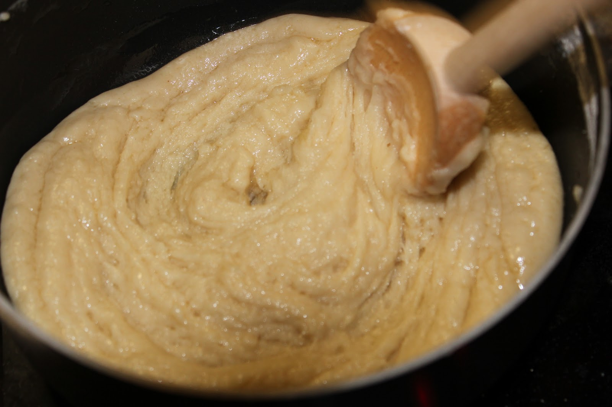

Step 2: In the bowl of a stand mixer fitted with a paddle, combine flour and next 6 ingredients. Beat at low speed until dough forms. Gradually add butter, beating until absorbed between additions and occasionally scraping down sides of bowl. Increase speed to medium and beat until smooth and glossy, about 3 minutes. Scrape dough from paddle and sides of bowl. Cover with plastic wrap; let rise for 2 hours.
